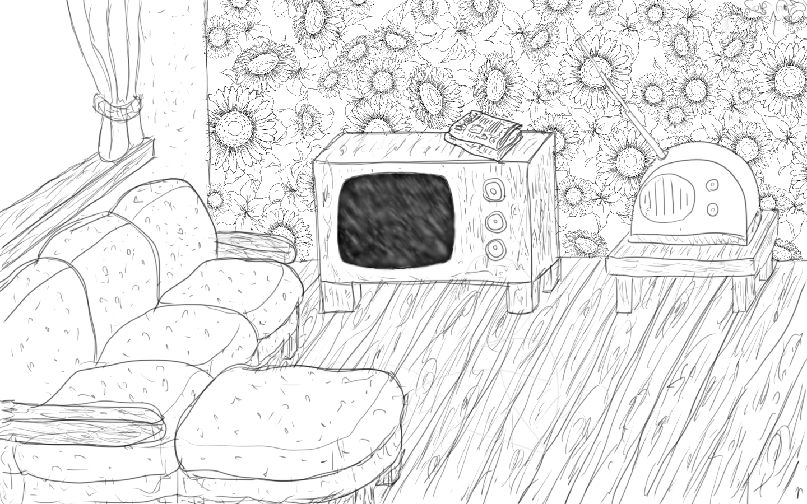
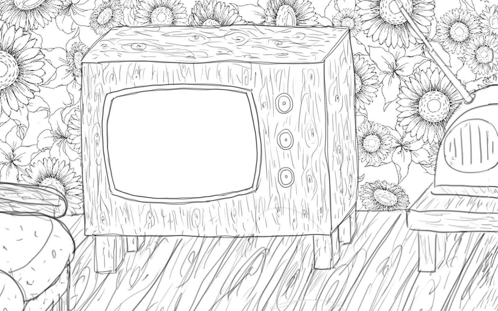

Your browser does not support the audio tag.
Your browser does not support the audio tag.
Ich bin informiert
In welchem Jahr wurde in der Schweiz das erste Mal über das nationale Frauenstimmrecht abgestimmt?
Richtig!
Welche vier Kantone haben das volle kantonale Frauenstimmrecht bereits eingeführt?
Du hast's drauf!
Wo in der Schweiz durften die Frauen zum ersten Mal abstimmen?